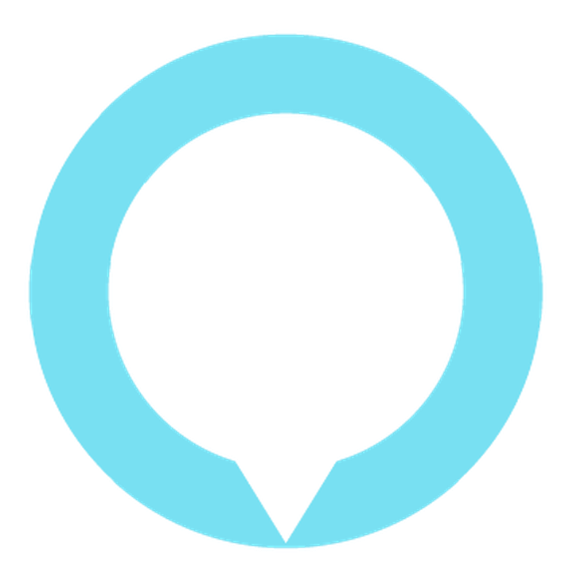

Mylemans Online OBS scene pack
| Scene | Your source | X | Y | Width | Height |
|---|
The screen region in the two Screensharing + Webcam scenes is not 16:9. Crop your capture to it (hold Alt while dragging an edge in OBS), or scale to the width and accept a gap below.
The music player drives the chip on streaming scenes: play a track and it appears, pause and it hides. Any tool that writes now-playing.txt works too.
Bakes ?track= into the copied URLs, which then ignore the player.
Streaming scenes draw a branded chat frame. Add your real chat as its own transparent Browser source (StreamElements, your YouTube or Twitch widget) at the position in the table.
They leave out chat, now playing, the LIVE badge and the clock on purpose, so the recording stays reusable.
?mins=10 or ?until=20:30 countdown?v=1|2|3 starting layout for standby scenes?topic=… pins a topic on one source (live pushes skip it)?yt= &gh= &bs= override social handlesBrand name, handles, logo and accent colours live in config.json.